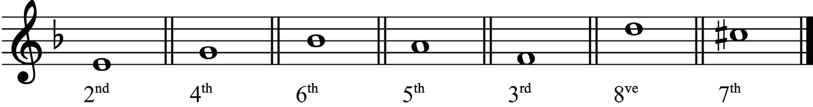
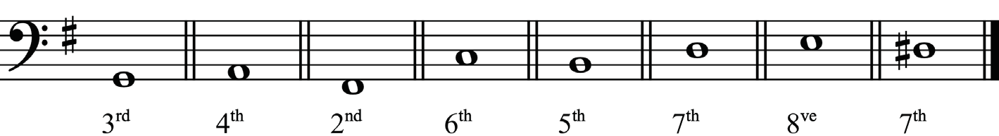
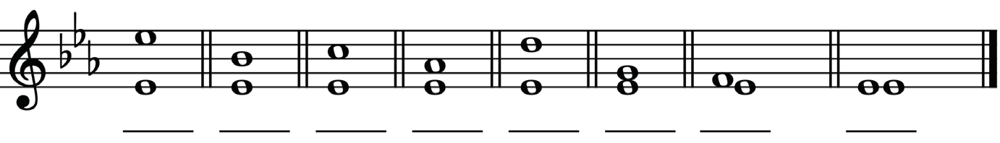
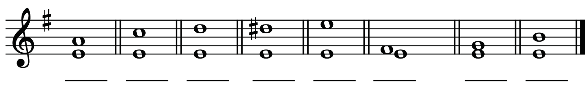
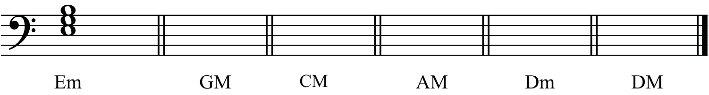
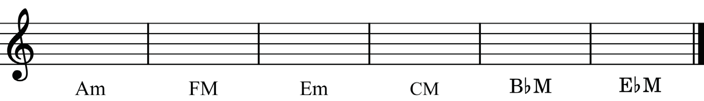

(i)

(ii)

3.
In each of the following bars, write the numeric size of the given intervals in the space provided.
(i)

(ii)

4.
In each of the following bars, construct the indicated tonic triad.
The first bar in question 4 (i) is given as an example.
Note that m is for minor triads and M is for major triads.
(i)

(ii)
